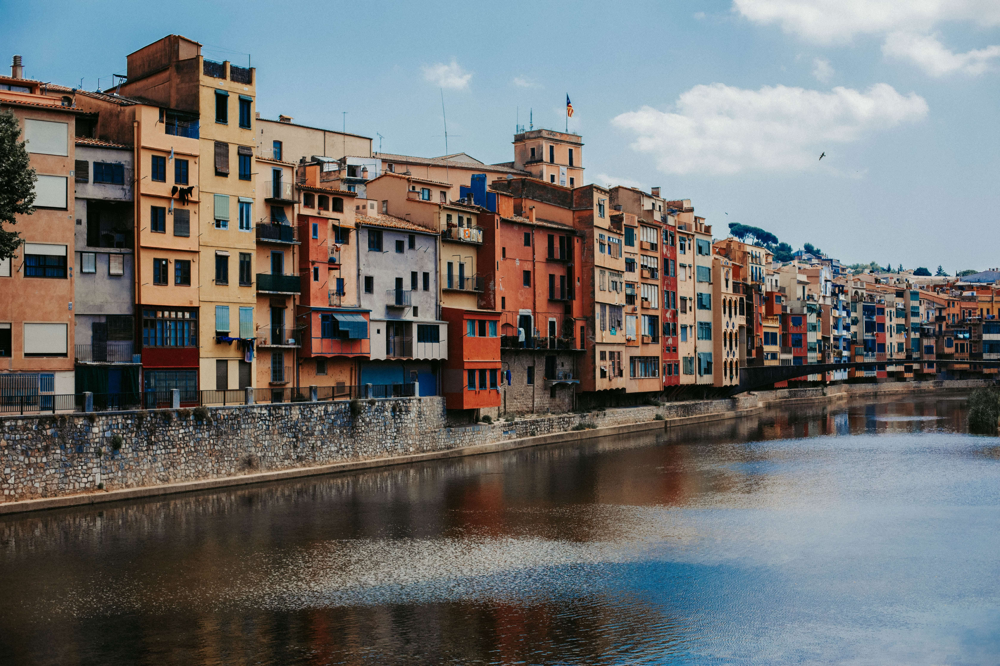

Park Güell

Park Güell is een openbaar park in Barcelona. Het park is ontworpen door Antoni Gaudí.
In het park staan veel kleurrijke gebouwen en mozaïeken diegemaakt zijn is de stijl van Gaudí.
Zelf ben ik nog nooit naar Park Güell geweest, maar ik zou er wel graag naartoe willen gaan.
Sagrada Família

De Sagrada Família is een hele grote kerk in Barcelona. de Kerk is ook gemaakt door Antoni Gaudí.
De bouw van de kerk begon in 1882 en is nog steeds niet klaar.
Ook hier ben ik nog nooit geweest. Ik zou het wel cool vinden om te zien, maar ik weet niet of het mijn tijd echt waard is om heen te rijzen.
Girona
Girona is een stad in het noordoosten van Spanje. Het ligt dicht bij de grens naar Frankrijk.
Deze stad heeft een erg mooi oud centrum, en 2 rivieren die rond/door de stad heen lopen.
In deze stad zijn ook een paar scenes van de serie Game Of Thrones opgenomen. Bij een groote cathedraal.
Toen ik zelf in girona was was ik erg onder de indruk van de kleurrijke gebouwen, de lange stadsmuur en de grote cathedraal. Het was erg druk in de stad, ook misschien vanwege de scenes die er opgenomen zijn voor Game Of Thrones.
Camp Nou

Camp Nou is het officiële stadion van FC Barcelona. Het stadion 99.354 plaatsen en is daarmee het grootste stadion van Europa.
Het stadion is geopend op 24 september 1957 en is al meerdere keren gerenoveerd.
Nu zijn ze ook weer bezig om het stadion te verbouwen. Het stadion gaat in 2026 weer open.
Zelf ben ik ook in dit stadion geweest. Ik vond het heel cool om te zien, en heb zelfs op het gras kunnen staan. Ook heb je een muzeum in het stadion waar ze over de geschiedenis van de club en hun gewonnen trofeën praten.